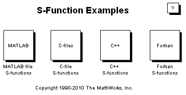

S-function API を使用するカスタム コードおよびハンド コードされたブロック
このライブラリは、さまざまなタイプの Simulink® S-function の例を起動します。Simulink S-function を使用すると、ハンド コードされたブロックを新たに加えて Simulink を拡張したり、カスタム外部コードとのインターフェイスをとったり、他のプログラムへのライブ インターフェイスを作成したりできます。このデモから、C、C++、M および Fortran プログラミング言語の S-function が含まれたモデルにアクセスできます。
それぞれの例には、S-function ブロックを実行するモデルと、S-function コードを編集するためのリンクが含まれています。[S-function ブロック] ダイアログ (一部のモデルでは、このダイアログはマスクされています。その場合は、[マスク内の表示] コンテキスト メニュー項目を使用して S-function のダイアログにアクセスしてください) の [編集] を使用して、メイン S-function ファイルにアクセスすることもできます。
また、S-function Builder ブロックは S-function ブロックのマスク バージョンであり、そこには使いやすいエディターが含まれています。このエディターに、入力、出力、およびパラメーター属性と共にコア アルゴリズムを入力すると、そのコア アルゴリズムから自動的に S-function が作成されます。既定の設定では、S-function Builder は、Real-Time Workshop® および Real-Time Workshop® Embedded Coder™ 用の TLC ファイルも作成します。
